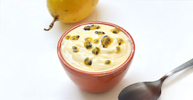

Receita - Mouse de Maracujá

Mouse de Maracujá
Ingredientes
- 1 lata de leite condensado
- 1 lata de creme de leite
- 1 lata de suco de maracujá(aproximadamente 4 maracujás)
- 1 pacote de gelatina incolor
- Semente de maracujá para decoração
Modo de Preparo
- Hidrate a gelatina na água, e depois dessolva em banho maria
- Misture todos ingredientes um um liquidificador(exceto as sementes)
- Bata todos os ingredientes
- Coloque eum um reipiente e decore com as sementes
- Leve a geladeira por aproximadamente 4 horas
- Devore
Informações Nutricionais
| Nutrientes |
Porção(60g) |
%vd |
| Valor Calórico |
225,37 |
9,01 |
| Carboidratos(g) |
40,56 |
10,82 |